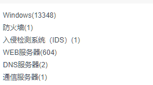
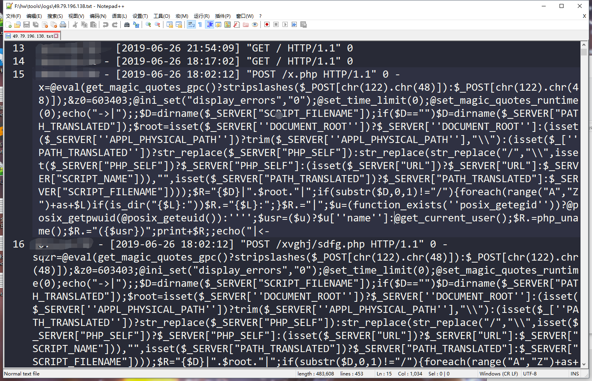
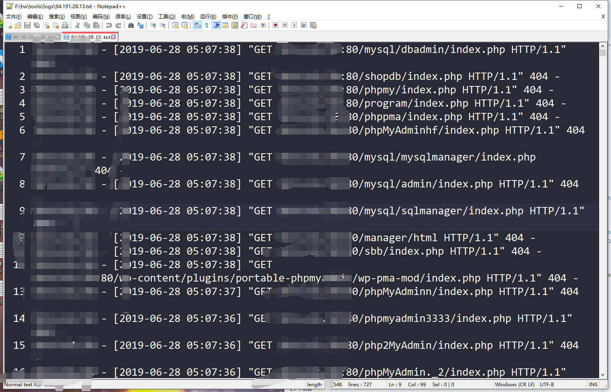
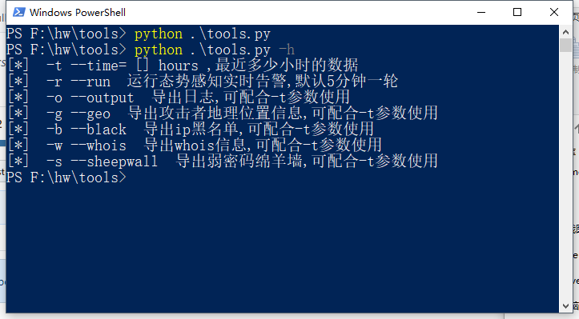

本文原发于T00LS https://www.t00ls.net/articles-52212.html,博客转自本人仅做备份用途
写在之前
这个总结来的比较晚了,007hw半个月弄完后出去玩了一段时间,回来又打了几天游戏(捂脸
其实也没什么特别的技巧,但是也算是我第一次接触实战环境的企业安全.
运气好既参加过防守方也当过三天攻击方.
写一下学习笔记.写得比较随意,逻辑排版都有些混乱,见谅.
以下大部分数据已抹去关键信息,并且进行了一定的修改.
接手
和某司谈好价格,当晚就出发了(真不怕被卖了,心大
我到的时候已经是12号,行动开始已经两天了.
到单位后,发现有一个十多人的小团队日夜连轴转,圈内知名大佬带队;流量审计,日志审计,内部红蓝对抗测试有条不紊.
好吧,以上都是我的想象,实际情况是,除了该单位原本的网信部门四五人,没有人懂网络安全,都是靠着电话疯狂咨询购买设备的乙方公司度日.
实际情况出地铁口就看到这单位有三幢高25层高的大楼,以及旁边近十栋其他建筑,多个位于不同地区的下属单位,这所有的流量都先进过该单位的防火墙.

这是态势感知里面的资产汇总,web没这么多,因为一些办公用pc默认打开的IIS没关.
实际上只有几十个不同的内外网web服务.安全设备基本是一整套老的各大厂的设备.包括IDS,IPS,态势感知,下一代防火墙,WAF,流量审计,堡垒机,网闸等十数台,以及新的某个单独公司的一整套安全设备,除了以上提到的,还有apt感知,dpi探针,蜜罐等等十数台安全设备.各下属单位还有各自的安全设备,除了apt感知,dpi探针这两个设备外基本也有一整套,只是流量会先经过我这边的防火墙.总的来说基本上每类设备都有三台或以上,一次hw感觉把国内各大厂的设备都见识了一遍.
wdnmd,这东西就我一个人防守?
摸查
本来火车上一晚上没睡,看到这架势瞬间清醒,开始工作.
因为最近该单位购入了不少新设备,还处于测试阶段,网络拓补图都还没更新,只有一个防火墙里面带的网络拓补图功能,还有少量设备没有添加进去,也是第一次看到这蜘蛛网一样的内网架构,直到第三四天才大致弄清楚.
大致上整个内网连在一起,办公网和业务在同一个内网,没有做各种隔离,可以直接访问.
然后准备清查下资产,结果内外网的服务资产清单也没有.都得亲手弄.
先挂着nmap扫下公网网段,这单位公网还不在同一个C段,总共有五六十个ip地址,不是每个上面都有服务,因为不少服务开在高端口,直接全端口扫描.
内网也挂个nessus扫B段,主要是扫几个业务网段的C段.
新版nessus被限制只能扫16个ip,网上找到的无限制版.
https://pan.baidu.com/s/1byuxNOacLhIgwijAqW6NWg 提取码: 2333
拿subDomainsBrute扫了下子域名.
顺便在zoomeye,shodan之类的搜索引擎上手动翻了翻公网资产.
只进行了一些简单的资产清查,事实上,在后面的一段时间,还经常能发现一些疏漏的资产,万幸的是虽然有攻击行为,但没有被打穿.
审计
等各种扫描器结果的时候,翻了翻前两天的各种日志,好在各个平台都汇总到态势感知了,方便很多.
最开始打算审计下日志,光两个门户网站,一天40w+条http访问记录.只能放弃.只能看先告警信息,然后在指定ip审计日志.花了几个小时大致翻了下数千条告警日志,99%以上攻击流量都是扫描器.
感觉这类被动防御的安全设备局限挺大,告警信息基本都是被已经拦截的流量,没被拦截的流量根本不告警.一旦流量特别大,大到人力不可逐条审计的时候,只能等待被黑才能反查线索.
看了下攻击特征,awvs,ibmscan之类的扫描器基本没有,毕竟动静太大了,主要是类似pocsuite这类的可以直接打exp的测试工具以及一些小工具.
顺便还发现了还有大佬爆破webshell路径和密码的.感觉这个不像是攻击方打出来的,可能是某些黑产团队全网乱扫,里面找到了一些知名的webshell密码.
主要还是外网对内网的扫描,内网一切太平.
翻完流量记录,基本可以确定前两天还没有被人直接进来内网漫游.当然也有可能是已经进来了,但是内网渗透特别谨慎,没有触发过一次报警.听说过一些大佬,在内网渗透的时候可以熬半年一年,慢慢潜伏收集信息然后来一波大的.
听单位的人说,前两天钓鱼邮件特别多,他们现在已经把邮件服务器关了,但是我寻思,人家如果找到了员工其他邮箱,比如qq,网易邮箱,会上钩的还是会上钩.
某厂apt感知的设备有一个文件监测的功能,整个内网中传输的所有文件都会经过沙箱运行,有敏感行为会报警.这功能还不错,省去很大麻烦,刚才提到的大量钓鱼邮件就是这个沙箱发现的.
翻了下apt设备报警的几个文件,有三个doc,用的cve-2017-11826,还有几个后缀就是exe.这单位连网信中心的员工都没打开文件夹选项中的显示文件后缀名,中招的几率还真不小.
翻着翻着然后就闹了个乌龙.态势感知报警某个人pc上有木马行为.吓得我一身冷汗,直接找到那台电脑看了半天也没找到攻击痕迹,看着事件记录器里面有system账户登录并且分配权限的记录,还以为真被黑了.然后才发现对外网连接的域名是快压.流氓软件里面带广告木马,设备误认为是木马反弹了shell回去.
还一台内网的提供dns服务的服务器,因为版本太老了,发送的流量包一直会出发报警,apt感知设备里面直接写明了已沦陷,也花了不少时间去分析.后来在一台最新的cenos系统上重新搭了一个dns服务器,问题就解决了.毕竟用dns shell这种相对较为隐蔽的后门更符合攻击方大佬的风格.
来来回回折腾了一整天各种设备.感觉有个功能比较缺,就是不能直接导出日志,得在态势感知里面一条一条点一条一条看,效率极低.然后就写了个脚本,按照apache的日志格式把态势感知里面的数据导出来.只要某个攻击者ip触发过一次报警,就会导出他的所有http访问日志.
大致效果如下:


稍微方便日志审计.
脚本在我的github,仅适配了某厂的态势感知平台,类似一个爬虫一样爬数据然后简单处理汇总.

把一些常用的功能集合到了一起.完全定制的,不具有通用性,看看就好..
还是可以看到有很多没有告警的攻击行为的,比如大量目录爆破,exp盲打等.
中间还写了不少脚本帮我处理这对我来说稍微有点庞大的流量数据.
比较有意思的是,写脚本的时候发现了某司态势感知有未授权访问漏洞,能访问态势感知内的全部记录.遂当即提交.还闹了点不愉快.毕竟某司靠产品经理做应急响应(捂脸).
还有某厂设备防火墙,只认ip不认cookie,可以绕过验证机制直接访问.
修复
到nmap和nessus这些扫描器的结果出来,一看几十个红红的严重漏洞.稍微分析了下,全部漏洞都是版本落后导致的.当然这也和用的扫描器有关系,只能扫这些漏洞.
其中主要的能利用的还是各自web中间件为主,比如weblogic,还出了0day.如果别人进了内网,这时候又还没做内网隔离,是可以直接杀穿内网的.
weblogic被攻击的那个组件是老问题了,基本上每年都发病,黑名单过滤总是能绕过,直接删掉这个组件就能解决问题.后来官方修复终于改成白名单了.
还有一些老旧的打印机,nas,包括一个思科的路由器(漏洞是方程式组织爆出的其中一个,思科官方都已经放弃修复了),都存在不少RCE,不少漏洞网上直接能找到exp.
特别是一些打印机,账号admin,密码admin,123456的一堆,打开web界面也是充满年代感.不用弱密码估计也有不少漏洞.就暂时停用或者不接入内网,仅个人使用.
还有ftp空密码或弱密码,以及ftp系统的一些rce,拿着十年前公开的exp就可以乱杀.
还一个windows iis的MS15-034,好像没有rce的exp,只有一些信息泄露的poc.以防万一还是打了补丁.
实际上内网还是比较薄弱的,原因主要在该单位不少员工自建了nas,ftp,打印机甚至数据库等服务,并且缺乏维护,漏洞较多且存在大量弱口令.而且部分内网服务长时间不升级,多个RCE在内网晃了好几年.
而且内网各网段直接没有隔离,任何一台机子沦陷,都有可能导致整个内网开花.
外网的话,停用了部分边缘的服务,留下十来个比较重要不能关闭的的服务.摸清楚使用的框架和中间件,整理一个资产清单,时刻关注漏洞情报,如果是老版本能升级,先升级.
大中型企业单位内网主要都是以java为主,所以一些sql注入之类的漏洞就不太容易出现,也减少了很大的麻烦.门户网站前台基本是静态页面,后台管理在高端口,路径也不是特别容易爆破的,加个验证码,不要弱密码.这样一套下去,只要不出未授权访问和中间件的RCE漏洞,攻击方就很难进攻.
这单位大部分系统都云化了,用vmware管理,直接禁用网卡,上线和下线的速度都很快.
修复内网漏洞花了好几天时间,外网做的还算可以,一直看着攻击方各种扫描.一开始还封ip,封着封着第三天就上代理池扫描器了,就干脆不封了.只把这些ip放到一个灰名单里面,用脚本持续输出流量日志方便监控.
听说某些单位一天能封700个C段数万个ip,感觉有些过度防卫了.我这里就封这么点ip还误封了某cdn,导致互联网上大量图片视频无法加载,下面员工电话疯狂轰炸.
总得来说,摸清楚资产,关闭边缘服务,清理弱密码,修复漏洞.这样一套只要不是0day和钓鱼就很难攻击进来.
当然还是重边界清内网,内网这上万台各类机子,很难保证能扫描到所有问题,一些打印机,路由器0day也比较多.如果边界被突破,内网防护能力会弱很多.所以已经做好了如果被黑直接断网的打算.
应对钓鱼攻击,单位还做了几十块板子,写着一些网络安全防护的tips,贴在电梯,办公室之类的地方.虽然用处可能不是很大(捂脸)
反击
其实也可以通过一些简单手段进行反击.虽然我没有成功,但是也听说了一些案例.
某些攻击人员喜欢拿自己的vps当做跳板,可能因为工具全.但是有些人也喜欢把博客建在上面,或者曾经把博客的域名绑定到这个vps上过.这时候就可以通过反查whois信息,找到网站或者身份信息.然后添加社交软件社工.甚至通过朋友圈找到了那位师傅姓名照片和当时住的酒店.
听说后我也写了一个脚本,批量反查攻击ip的whois信息,但是并没有收获.
脚本在这 https://github.com/M09Ic/myscript/blob/master/reverse_whois.py
sqlmap 远程代码执行,awvs两个远程代码执行漏洞.github上有师傅写过一个多个漏洞集成的反击工具.
蜜罐,因为领导觉得蜜罐放公网有点招蜂引蝶的意思,保险起见就只把蜜罐开在内网了.不过据说某司蜜罐还是发挥了很大作用.
0day
最关键的部分就是0day,看起来这几十台各类各大厂的安全设备,但实际上对0day的防护能力还是0.
目前防护的办法就是尽快得到消息,然后下线相关系统修复.
大佬们确实很强,主流的java框架和中间件在hw期间都出了0day或1day,有多少是大佬打出来的就不知道了.
简单整理一下.
weblogic https://cve.mitre.org/cgi-bin/cvename.cgi?name=CVE-2019-2729
jboss https://xz.aliyun.com/t/5326
webpshere https://www.seebug.org/vuldb/ssvid-98002
tomcat https://paper.seebug.org/958/
fastjson https://www.anquanke.com/post/id/181874
windows 域控 https://paper.seebug.org/962/
strust2 某个老版本补丁绕过 RCE
还有一些比如深信服 ssl vpn , jumpserver堡垒机, 禅道项目管理,致远oa,coremail邮件系统等等一堆应用的0day.
总得来说,防0day就靠水群,水着水着就有师傅出来爆漏洞预警,如果是被第一个打的,只能gg.
关于0day的确实毫无抵抗之类,可见的未来之内也找不到好的方法防御.只能是关注动态,快速响应.
如果只知道0day大致信息,可以在waf上配置相应规则捕捉攻击流量.
攻击
正好某市也举办了攻防演练.这次应某公司邀请去当攻击方.
不过市护网时间比较短,加上报道也就三天,应该只能进行简单渗透.
第一天拿到目标清单,看了下,估计应该防守方比较薄弱,某些单位明显不像是有防守能力的.事实上也差不多.
目标比较多,就直接先上某司公网扫描器扫一遍.还真有不少收获.
自己也去手动测试了几个漏洞,时间比较有限,基本上是一个站扫描+简单手动测试,没有漏洞就换下一个目标.
运气好找到一个很老的站的弱密码,进去之后千疮百孔.xss,sql,csrf等等该有的全都有了,刷了不少分.
稍微有趣的是,这个系统sql还有过滤,过滤了不少重要函数与关键字.绕了半天也无法getshell,一怒之下用benchmark函数dos攻击,把一个无用的sql漏洞变成dos.感觉和打ctf一样.
然后又找到了某司的某产品一个未授权访问漏洞.未授权访问漏洞基本上不带cookie把全部api访问一遍,靠运气撞,总能遇到的.
看了下其他队伍,得分特别高的主要也是现成漏洞直接rce开启内网漫游,大部分企业还是重边界轻内网,一旦边界被突破,加上没有防守力量,很容易被打穿内网得到.weblogic是得分主力.
2019.8.4 update
某省护网小伙伴去了,回来和我分享了下经验.
主要还是强调了信息收集和社工的重要性.
某大厂通过搜索到某单位官网上的一个qq群,没有验证,直接进群了.再在群公告中找到了一个内部核心群.这个内部核心群里有VPN账号密码,和多个重要系统的账号密码.直接进内网开始漫游,拿到大量分数.
还有某厂,weblogic的cve-2019-2529进内网,钓鱼管理员得到更多的重要信息,开始内网漫游.
总结
刷src打ctf和这种红蓝对抗是完全不同的思路,红蓝对抗大多不会这么细致的去寻找每一个可利用的,攻击方眼中只有getshell.一旦getshell,除了某些防御能力极其强的单位,内网还有一二三级划分,各部门之间还有边界之外,基本没有反抗能力,只能断网清理木马后门,寻找攻击痕迹.
红方和蓝方也是完全不同的思路.这种大型攻防演练中,防守方很容易过度防守,下线业务,大规模封ip之类的.而像我这么菜的攻击方则是到处碰运气,找弱口令,找各大框架的1wday漏洞,找未授权访问.所以攻击方的主要手段就变成了信息收集.或者使用钓鱼手段,通过个人终端进行内网渗透.
运气挺好的,hw期间除了ssl vpn 0day之外,其他没有影响到我们.tomcat虽然用的比较多,也有了poc,但是利用条件比较苛刻还是什么原因,没有被攻击.侥幸苟过3周,功成身退.
至于内网渗透,我太菜了,根本感觉不出什么东西.